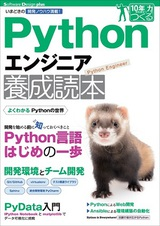
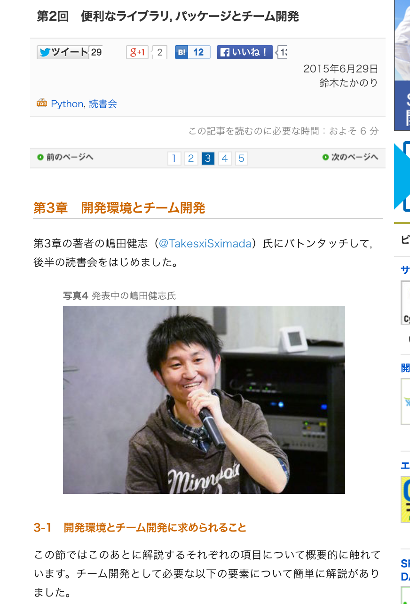
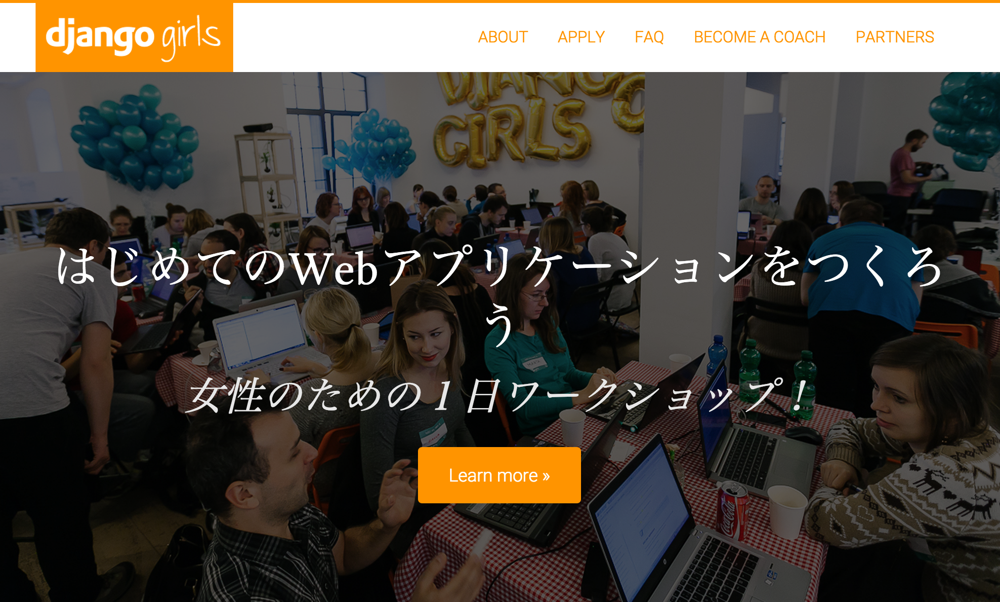
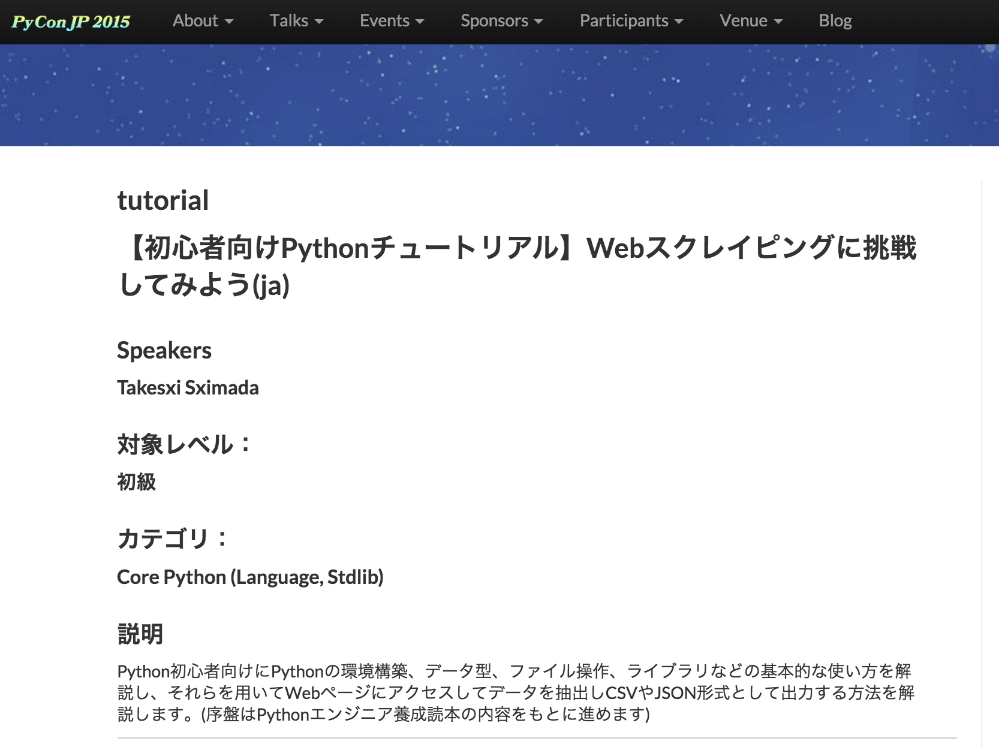
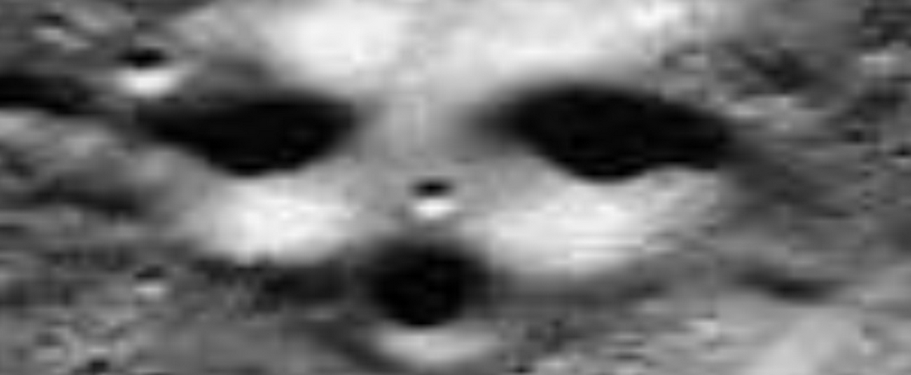

Bokehでデータ可視化
Created by 嶋田健志 / @TakesxiSximada
はい
お前誰よ(自己紹介)
- 嶋田健志 (@TakesxiSximada)
- Webエンジニア
- フリーランス
- Python好き
宣伝
本書きました 好評発売中(共著)
Pythonエンジニア養成読本 (技術評論社)
読書会もやっています
次回は2015/08/27(木)
http://pymook.connpass.com/event/16291/

DjangGirls
やりますやりました
Django のワークショップ (女性限定)
第2回も計画中
http://djangogirls.org/tokyo/

SoftLayer Bluemix SUMMIT 2015
NASAをHack!Bluemix+Pythonを駆使した宇宙人探し奮闘記
2015/09/02 (水) トークセッションします
PyConJP 2015 チュートリアル
【初心者向けPythonチュートリアル】Webスクレイピングに挑戦してみよう(ja)
採用されました(2015-10-09(金)に行います)

PyConJP 2015 トークセッション
Python × Bluemix でやったHack-a-thonでの超短期間認識系アプリ開発事例(ja)
BIMのIaaS/PaaSであるBluemixを用いてアプリケーションをいかに素早く作成してdeploy方法などを当日のドタバタを含めて紹介
本題
前回のport_mokumoku #06 では
こんなことをしていた
前回のport_mokumokuでやっていたこと
宇宙にはたくさんの星がある
文明を持った知的な存在も発生していたはず
宇宙に漂う天体にその痕跡があるはず!!
こういうのを探していた
...今日はこれはやりません(気乗りしなかったので)
Python界隈ではデータ解析系が
とても盛り上がっている
関連ツール/ライブラリ
統計/機械学習
- pandas
- scikit-learn
- pylean2
- chainer
自然言語系
- NLTK
- igo-python
- pymecab
関連ツール/ライブラリ まだまだ
データビジュアライズ
- matplotlib
- Bokeh
その他
- IPython
notebook - anaconda
....多い
しかもそれぞれむずい
今日はBokehを使ってみた
Bokeh - Statistical and novel interactive HTML plots for Python
- 読み方はボケ
- グラフを作成するためのライブラリ
- 今まであったものでいうとmatplotlibてきなやつ
- 動的なグラフとかが割と楽に作れる(らしい (よくわかっていない))
Bokehのグラフを覗いてみる
http://bokeh.pydata.org/
すごい簡単
....なのかな?
とりあえずなんか書いてみる
特に理由はないけど
Gitのコード量の増減をグラフにしてみよう
....IPython notebookで
せっかくなんでscriptにしておこう
https://gist.github.com/TakesxiSximada/fddd6df72b5762ebcd39#file-git-counter-py
READMEとrequirements.txtを書いておいた
https://gist.github.com/TakesxiSximada/fddd6df72b5762ebcd39
shimizukawa++
実行結果はこちら
今日のまとめ
- 宇宙人は探さなかった
- bokehが出力するグラフは結構いい感じ
- でもやっぱりすこし触って実験する必要ありそう
みんなやろうよ!!
Bokeh